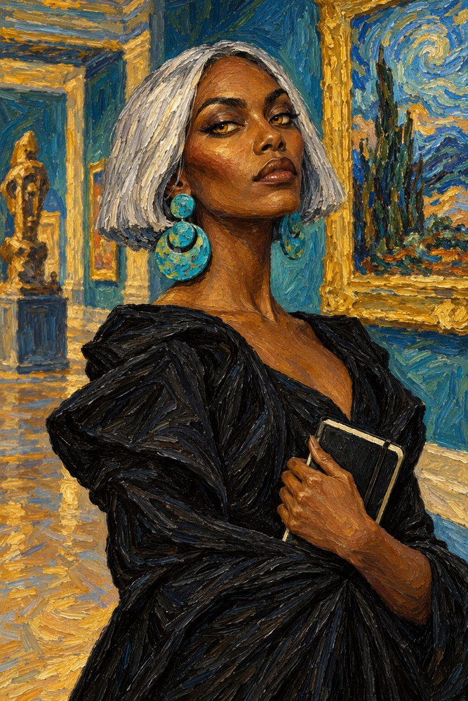
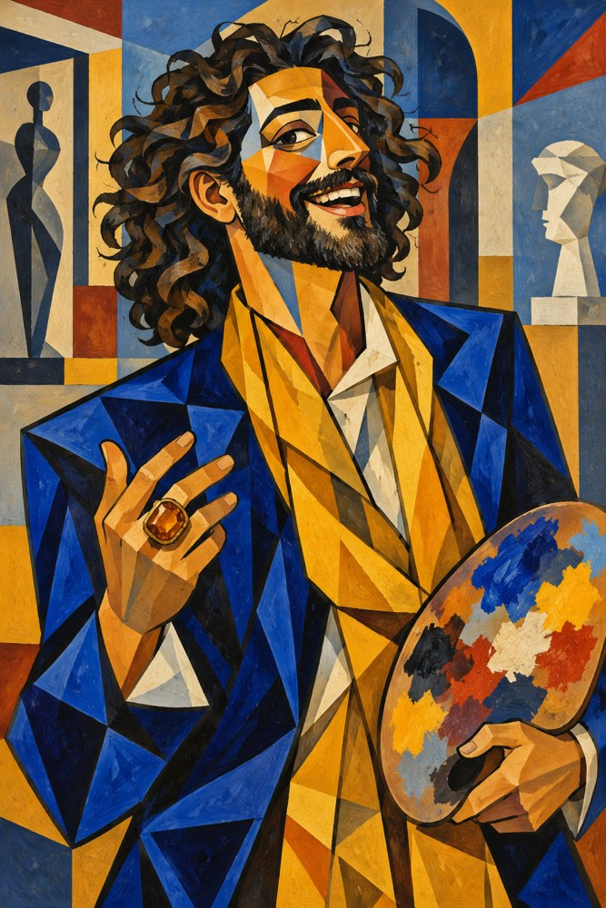

Meridian Museum · 2026
The Last Acquisition
The guests are works of art.
One of them is a piece of work.
October 30, 2026 · Tulsa · 15–30 players


The guests are works of art.
One of them is a piece of work.
October 30, 2026 · Tulsa · 15–30 players